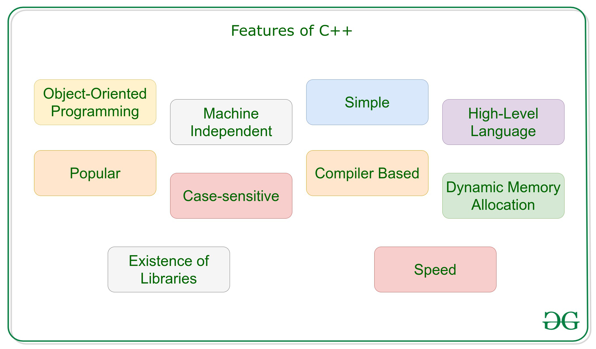

About this Article
The main motto of this Article is to explain all the concepts related to C++ language and it's applications in real life. So that people can clearly get an idea about this language. Nowadays it's necessary to know all about programming languages if one can able to understand their interest in a particular language they can easily excel it. The first and foremost thing is that we should have some idea on these languages so that you can recognise your interest on a your interested language.
C++
C++ is known as General purpose language and it's an extension to C language.C++ was developed by Bjarne Stroustrup in the early 1980's. The difference is that C++ is Object Oriented Programming language where as C is not. The basic syntax and structure of the code is almost same. C++ main features are Simple, Machine Independent, Rich library, Fast Execution, Pointers, Object Oriented and many more.
The basic syntax
#include
using namespace std;
int main() //program starts here
{
cout<<"Hello World"; //prints hello World
return 0;
}
C++ Features

using namespace std;
int main() //program starts here
{
cout<<"Hello World"; //prints hello World
return 0;
}
Real-Time Applications
1.Games
2.GUI based Applications
3.Database Software
4.Operating Systems
5.Browsers
6.Compilers
7.Banking Applications
8.Cloud/Distributed Systems
9.Embedded Systems
10.Advanced Computations
Concepts of Object-oriented programming Language:
Class:
A class is a collection of similar types of objects that share common attributes and behavior. A class is defined in C++ using keyword class followed by the name of class.
Syntax:
Class Classname;
using namespace std;
class Classname
{
Access specifier: //can be public,private or protected
Data members; //declaring variables
Member functions() //methods
};
Objects:
An Object is an instance of a Class. When a class is defined, no memory is allocated but when it is instantiated memory is allocated. Defining Class and Declaring Objects.
Syntax for object declaration:
Classname Objectname;
Class wish
{
void display() //method
{
cout<<"HI....";
}
};
int main()
{
wish obj; //creating object for wish class
obj.dispaly(); //calling display method
return 0;
}
Encapsulation:
wrapping up of data and information under a single unit. In Object Oriented Programming, Encapsulation is defined as binding together the data and the functions that manipulates them. Encapsulation also lead to data abstraction.

Polymorphism:
The same entity behaves different in different scenarios. They can be Function or Object.
There are two types of Polymorphism:
1. Compile Time:
Function overloading means one function can perform many tasks. In C++, a single function is used to perform many tasks with the same name and different types of arguments. In the function overloading function will call at the time of program compilation. It is an example of compile-time polymorphism.
class function
{
public:
void fun(int x)
{
cout<
}
void fun(float x)
{
cout<
}
void fun(int x,int y)
{
cout<
}
};
2. Run Time
Method overriding is an example of runtime polymorphism. In method overriding, a subclass overrides a method with the same name as that of in its superclass. However, in the runtime, JVM figures out the object type and would run the method that belongs to that particular object.
class A
{
public:
void dispaly()
{
cout<<"Hello..I'm in super class"<
}
};
class B : public A
{
public:
void display()
{
cout<<"Hello..I'm in derived class";
}
};
int main()
{
B obj;
obj.display(); //when called display() then derived class method is invoked instead of super class. This is known as Method
overriding.
}
Abstraction:
It means displaying only essential information and hiding the internal details those not essential. For example consider a car, when we're driving we only concentrate on driving we don't care how internally a break or a stearing works inside. Hiding these kind of unwanted information inorder to simplify is known as "Abstraction".
Inheritance:
It's a process in which one object acquires all the properties and behaviors of it's parent object automatically. Class which inherits the members of another class is called derived class and the class whose members are inherited is called base class.
There are five types of Inheritances:
1. Single-level Inheritance
Single class is derived from the parent classExample Program
using namespace std;
class Animal
{
public:
void eat()
{
cout<<"Eating..."<
}
};
class Dog: public Animal
{
public:
void bark()
{
cout<<"Barking...";
}
};
int main(void)
{
Dog d1;
d1.eat();
d1.bark();
return 0;
}
In the above example from Animal class,class Dog is derived i.e only single class is derived.That's why it's known as "Single Level Inheritance".
2. Multiple Inheritance
Two or more classes are derived from single classExample Program
// Base class
class MyClass
{
public:
void myFunction()
{
cout << "In the base class 1";
}
};
// Another base class
class MyOtherClass
{
public:
void myOtherFunction()
{
cout << "In the base class 2";
}
};
// Derived class
class MyChildClass: public MyClass, public MyOtherClass
{
};
int main()
{
MyChildClass myObj;
myObj.myFunction();
myObj.myOtherFunction();
return 0;
}
In the above example we can observe that from more than one base class a derived class is derived.This is known as "Multiple Inheritance"
3. Multilevel Inheritance
One class derived from the derived class of another classExample Program
// Base class (parent)
class Parent
{
public:
void myFunction()
{
cout<<"Inside parent class";
}
};
// Derived class (child)
class Child: public Parent
{
};
// Derived class (grandchild)
class GrandChild: public Child
{
};
int main()
{
GrandChild myObj;
myObj.myFunction();
return 0;
}
In the above example we can observe that from base class a class is derived which's known as derived class and from this derived class another class is derived and another class can be derived from this class too..This is known as "Multilevel Inheritance".
4. Hybrid Inheritance
A class is derived from two or more classesExample Program
class A
{
.........
};
class B : public A
{
..........
};
class C
{
...........
};
class D : public B, public C
{
...........
};
In the above example we can observe that there's a Single Inheritance as well as Multiple Inheritance so it's a combination of two types of Inheritances. Hence this is called "Hybrid Inheritance".5. Hierarchical Inheritance
In the this more than one class is derived from one base class.Example Program
class A // base class
{
..............
};
class B : access_specifier A // derived class from A
{
...........
} ;
class C : access_specifier A // derived class from A
{
...........
} ;
class D : access_specifier A // derived class from A
{
...........
} ;
In the above example we can observe that more than one class is derived i.e from class A we can see that class B,C,D are derived. Hence it's considered as "Hierarchical Inheritance".
Memory Management
C++ allows us to allocate the memory of a variable or an array in run time.This is known as Dynamic Memory Allocation.In case of Python and Java memory is automatically allocated and deallocated by the compiler but in C++ this is not the case. The allocation and deallocation of the memory can be done using the new and delete operators respectively.
Threading
Multithreading is a specialized form of multitasking and multitasking is a feature that allows our system to execute two or more programs concurrently/simultaneously. There are two types of multitasking: process-based and thread-based.
Process-based multitasking handles the concurrent execution of programs. Thread-based multitasking deals with the multiprogramming of pieces of an equivalent program.